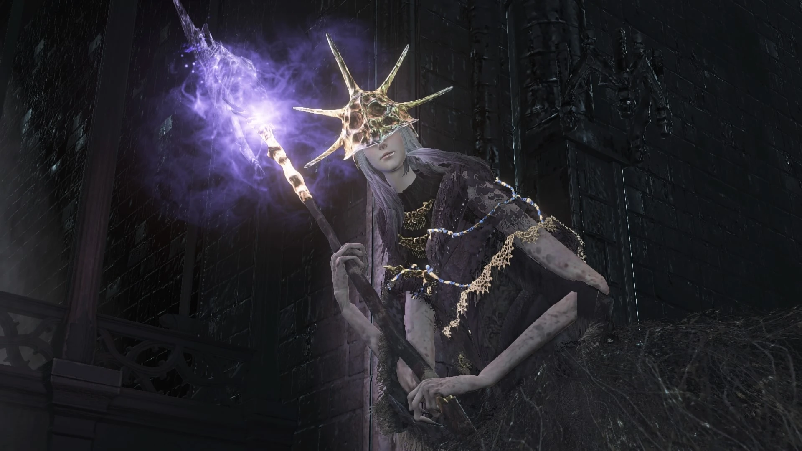

← Volver
← Volver
Aldrich, Devorador de Dioses, es uno de los Señores de Ceniza y un jefe de Dark Souls III. Aldich se presenta ante el jugador como una masa de huesos y carne con las vestimentas y el cuerpo superior similares a aquellos vestidos por Gwyndolin en Dark Souls. Ataca con las armas de Gwyndolin (un catalizador que se imbuye con fuego luego de que su barra de salud llegue a determinado punto, y un arco).
"Cuando Aldrich reflexionaba acerca de la desaparición de la Llama, fue inspirado por visionies de una era venidera del profundo océano. Él sabía que el camino sería arduo, pero no tenía miedo. Él devoraría a los mismos dioses."
Como la mayoría de las batallas de jefe de Dark Souls III, éste puede ser desafiado por jugadores de todos los niveles de habilidad. Al esquivar los ataques de Aldrich, se recomiendo rodar alejándose en lugar de bloquear, dada la naturaleza errática de sus ataques. Este jefe no es opcional y debe ser derrotado para progresar en el juego. Para asistir en la batalla con Aldrich, solo un NPC se encuentra a nuestra disposición:
¿Dónde se puede encontrar a Aldrich, Devorador de Dioses en Dark Souls III? En Anor Londo, subiendo las escaleras y entrando en la Catedral donde se lucha con Ornstein y Smough en el primer Dark Souls. Desde la hoguera, subir las escaleras con los dos Caballeros de Plata, hacia la izquierda donde se encuentra el cuerpo del Gigante herrero y su brasa, arriba por las escaleras, entrando al edificio y bajando por las escaleras internas, se puede ver la puerta de niebla. La puerta dorada del otro lado de la sala puede ser abierta mediante un mecanismo, permitiendo así un acceso más directo a la hoguera.
| Playthrough | NG | NG+ | NG++ | NG+3 | NG+4 | NG+5 | NG+6 | NG+7 |
|---|---|---|---|---|---|---|---|---|
| Solo Souls | 50000 | 150000 | 165001 | 168750 | 180000 | ? | 187500 | 191250 |
| Co-op Souls (1/4) | 12500 | 37500 | 41250 | 42187 | 45000 | ? | 46875 | 47812 |
Esta es la cantidad de Almas que obtendremos al derrotar a los Vigilantes del Abismo en los diferentes playthrough, desde el New Game regular hasta NG+7. También dropearán el Alma de Aldrich y las Cenizas de un Señor. (Solo dropeará una Brasa si se derrota al ser invocado al mundo de Anri).
| Playthrough | NG | NG+ | NG++ | NG+3 | NG+4 | NG+5 | NG+6 | NG+7 |
|---|---|---|---|---|---|---|---|---|
| Vida Total | 4.727 | 6.126 | 6.739 | 7.045 | 7.352 | 7.964 | 8.271 | 8.577 |
| Tipo de Daño | Básico | Golpe | Cortante | Empuje | Mágico | Fuego | Rayo | Oscuridad |
| Absorciones | 0% | 2% | -2% | -3% | 65% | -12% | 0% | 75% |

 ↑
↑